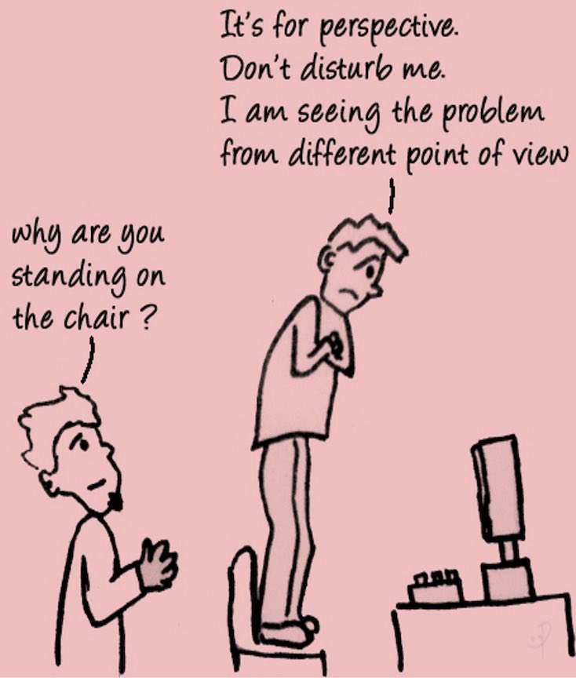

Projects
Brain is a complex system that requires huge efforts and different tools to be untangled. Over the years, it has become clear that looking at it from a single perspective, or through one lens at a time, is not enough to decode this complexity.
The aim of my research is to find - and make available - novel keys that would help shed light on the pathophysiological mechanisms of the human brain.

REACT - A SIMPLE, EFFECTIVE METHOD TO COMBINE PET AND fMRI
One of the main limitations of pharmacological fMRI is its inability to provide a molecular insight into the main effect of compounds. In fact, it relies on the strong assumption that haemodynamic changes can be considered a proxy of altered neurotransmission due to pharmacological agonism or antagonism actions, but the fMRI signal has no intrinsic selectivity to any particular receptor sites.
Supported by the receptor occupancy theory, which states that the magnitude of the drug response is a function of receptor availability and drug binding, REACT offers the possibility to enrich fMRI analysis with the molecular information about target distribution provided by PET and SPECT, a fundamental aspect in drug studies to explore the effects of pharmacological manipulation of brain networks.
See Dipasquale et al, 2019 and Dipasquale et al, 2020 to know more about the use of REACT in drug challenges.
One of the most interesting aspect of this approach is the definition of functional circuits associated to specific neurotransmitters, as this would allow the exploration of those systems that might be impaired in disease and thus a development of innovative and efficacious targeted treatments. Overall, REACT defines the drug-specific topography of brain functional connectivity and may provide an interesting new fingerprint in the characterisation of novel compounds and potentially greater insight to the commonly observed eclectic response to treatment. Some studies have already been conducted in this direction and have showed extremely promising results.
See Cercignani et al, 2021 and Martins et al, 2021 to know more.